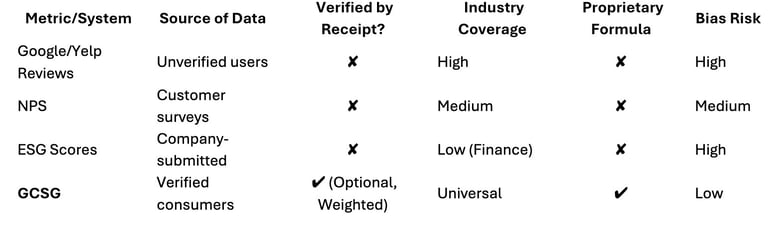

STRUCTURE OVERVIEW
Executive Summary
Section 1: Introduction
Section 2: What is GCSG
Section 3: How it Works
Section 4: Benefits
Section 5: Credibility
Section 6: Use Cases
Section 7: Roadmap
Section 8: Call to Action
Section 9: Business Strategy & IP
Section 10: Vision
Appendix
Executive Summary
The Global Customer Satisfaction Grade (GCSG) is a new standard for evaluating how well businesses and institutions serve their clients.
Like a FICO score for customer experience, GCSG translates real consumer feedback into a dynamic score ranging from 300 to 850. Powered by GladGrade, this system introduces transparency, accountability, and actionable insight into a space previously dominated by fragmented and often biased reviews.
This white paper outlines the problem GCSG solves, how it works, and why its adoption benefits everyone—consumers, businesses, regulators, and institutions.
1. Introduction: The Need for a Universal Standard
In today's digital landscape, review platforms are abundant, but trust in their accuracy and fairness is deteriorating. Most businesses can curate, filter, or even pay to boost their reputation. At the same time, consumers lack a reliable, unified way to assess service quality across industries.
GCSG addresses this gap. Built on verified consumer experiences and reinforced by tools that allow businesses to respond and improve, the GCSG becomes a credible, evolving benchmark. As ESG and DEI measure corporate ethics and impact, GCSG brings similar clarity to service delivery.
1.5 The Market Need for GCSG
Despite the rise of digital reviews, there is no standard for interpreting what those ratings mean across sectors. NPS (Net Promoter Score) is widely used but often skewed by non-response bias and lacks transparency. Platforms like Yelp, Google Reviews, and Trustpilot are easily manipulated, gamified, or riddled with unverified content.
What is missing is a neutral, auditable, and weighted scoring system that reflects not just opinion, but validated consumer experience. GCSG fills that gap.
2. What Is GCSG?
The Global Customer Satisfaction Grade (GCSG) is a numeric score (300–850) reflecting how well a business or institution meets consumer expectations. It is calculated from real-time data submitted by consumers and soon, employees. This includes satisfaction grades (0–10), review content, and optional receipt validation.
Each business location receives its own GCSG, and franchise parent companies are assigned a corporate-level average of all their child's locations. The GCSG recalculates with each new submission, providing a constantly evolving reflection of public perception.
2.5 Competitive Landscape

GCSG is designed to outlast single-purpose tools by applying them to any industry, any size, anywhere in the world.
3. How GCSG Works
- User Input: Consumers grade their experience on a scale of 0 to 10.
- Proof of Interaction: Consumers are encouraged, but not required, to upload a receipt or photo to validate their review. In future updates, reviews without receipts will carry a lower weight.
- Survey Questions: Tailored to each industry (e.g., food quality for restaurants, Wi-Fi speed for universities).
- Review Content: Optional written review and images add qualitative context.
- Weighting & Recalculation: GCSG is recalculated every time a new valid review is submitted. In future iterations, verified reviews (with receipts) will carry more weight. Time-decay logic and expanded AI moderation are planned.
4. Benefits of GCSG
a. For Consumers
- Instantly view a business's GCSG before engaging.
- Trust that scores are based on verified, unbiased user input.
- Use GCSG as a FICO score to make informed decisions.
b. For Businesses
- Gain access to dashboards showing categorized feedback and AI-driven insights.
- Publicly display their GCSG to build trust and improve reputation.
- Resolve issues and improve scores in real time through the GladGrade Portal.
- Connect with recommended solution providers.
c. For Regulators and Policy Makers
- Monitor industry trends and public satisfaction during emergencies (e.g., COVID-19, hurricanes).
- Identify underperforming regions or sectors quickly and clearly.
d. For Higher Education Institutions
- GladGrade's Higher Ed Module lets students and faculty rate schools across 10 dimensions: institution, dorms, professors, food, internet, security, entertainment, social, location, and remote learning.
- Universities receive insights, feedback, and the same portal tools as businesses.
- Families can compare schools with real-world feedback.
5. Ensuring Credibility & Fairness
- Consumer-Only Impact: Only real consumer actions (and validated resolutions) impact GCSG.
- Moderation & Sanitation: Reviews go through AI and human moderation.
- Portal Oversight: Admins and moderators monitor flagged cases manually.
- Platform Neutrality: GladGrade has no financial interest in influencing GCSG outcomes.
6. Use Cases
Local Restaurant
Low GCSG due to long wait times. Fixes are implemented based on feedback. Score improves and bookings increase.
Franchise Dealership
Scores tied to aggressive sales tactics. Leadership introduces training. GCSG rises; corporate HQ sees improvement.
University
Internet and dorm quality flagged. Universities use portal to address issues. Student satisfaction increases.
Emergency Response
During a hurricane, regulators use GCSG heatmaps to monitor real-time satisfaction with pharmacies, grocers, and gas stations.
7. Roadmap & What is Already in Practice
Already Live
- GCSG submission system with grading, receipt upload, and optional reviews.
- Business Portal with dashboards, response tools, and issue resolution.
- Higher Ed Module with 10-category grading.
- GladMenu for food-related businesses.
In Development
- Weighted scoring for verified reviews.
- Expanded sector modules (healthcare, airlines, public offices).
Planned
- Business benchmarking tools
- Employee-to-employer grading.
- Personalized consumer dashboards.
- Global expansion and sector-specific reports.
9. Business Strategy & IP
9.1 Business Model & Go-To-Market
GladGrade operates on a freemium model:
- Free tools like GladMenu and inventory listings.
- Tiered subscriptions unlock dashboards, analytics, and response tools.
- Future monetization includes ad placement, API access, and licensing to institutions and regulators.
9.2 Traction & Timeline
- Q4 2024: GladGrade launches on iOS and Android mobiles
- Q1-Q2 2025: Enhancements to mobile app, including Invite Friends, data storage and infrastructure. Higher Ed module expanded.
- Q3 2025: Portal onboarding for early businesses; MVP goes live. GCSG engine refined with receipt weighting.
- Q3–Q4 2025: Begin enterprise outreach, AI solution matching, and reporting dashboards
10. Vision for the Future
Imagine a future where the GCSG is as well-known as the FICO score, not just for consumers—but for institutions. Cities could track how satisfied residents are with their public schools. Insurance companies could monitor service levels at clinics. Job seekers could choose companies not just for salary but based on verified employee satisfaction.
GCSG is not just a score. It is a standard of accountability, and the layer of trust between people and the services they rely on.
8. Call to Action
Businesses
Register with GladGrade and take control of your GCSG today.
Consumers
Download the GladGrade app, grade your experiences, and make your voice count.
Investors
Help scale the future of service transparency.
Institutions
Partner with GladGrade to strengthen trust, performance, and satisfaction.
Appendix / Glossary
(To be developed)